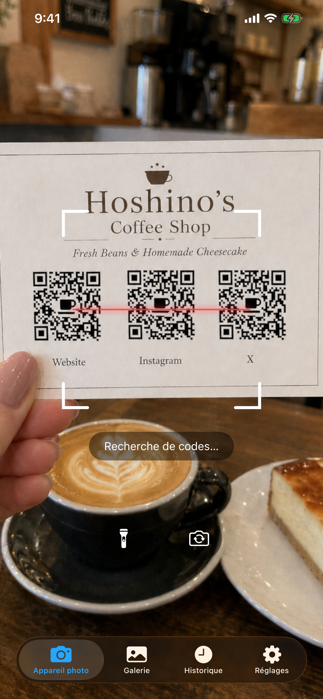
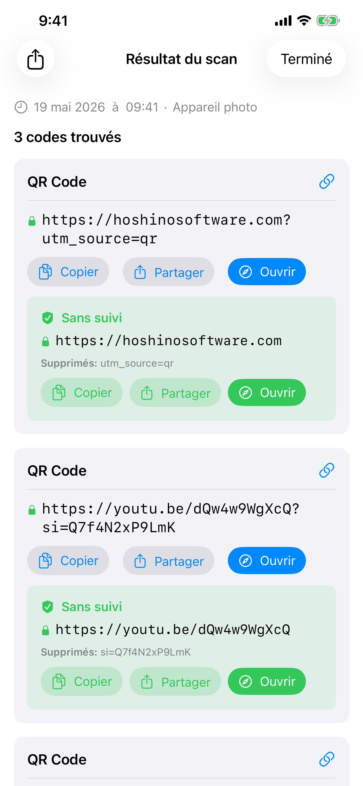
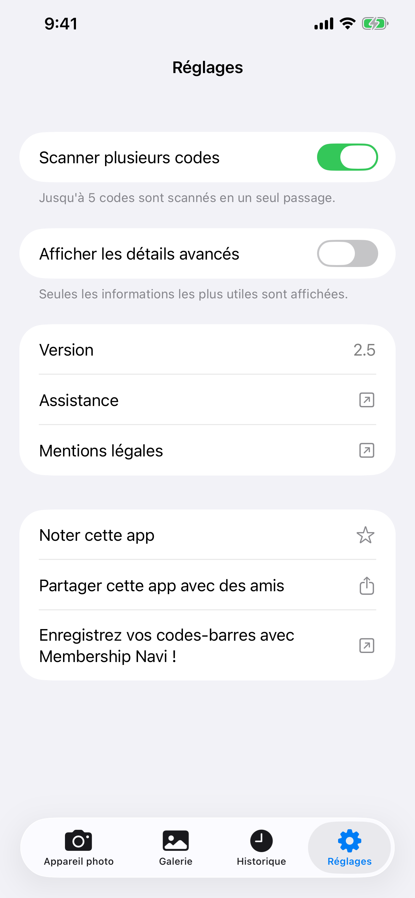

Lecteur de Codes
Lecteur de Codes scanne les codes-barres et les QR codes avec l'appareil photo de votre iPhone ou depuis n'importe quelle image de votre photothèque. Il fonctionne entièrement hors ligne, ne stocke rien dans le cloud et n'affiche jamais de publicités.
Télécharger


Lecteur de Codes est gratuit à télécharger sur l'App Store. Aucun compte requis. Nécessite iOS 26 ou version ultérieure.
Assistance
Une question, un bug ou besoin d'aide avec l'application ? Contactez-nous. Nous lisons chaque message.
Avant d'écrire
De nombreux problèmes courants sont traités dans le Manuel et la FAQ ci-dessous. Quelques vérifications rapides :
- Caméra qui ne fonctionne pas ? Allez dans Réglages iPhone → Confidentialité et sécurité → Caméra → activez l'accès pour Lecteur de Codes.
- Vous ne trouvez pas l'historique ? Appuyez sur l'onglet Historique. Les entrées sont conservées 6 mois et limitées à 1 000.
- Le code ne se scanne pas ? Assurez-vous d'avoir un bon éclairage et tenez le code bien stable. Essayez le mode Galerie si vous avez un fichier image.
- L'app plante ? Forcez la fermeture puis relancez-la. Si le problème persiste, contactez-nous par e-mail avec votre modèle d'iPhone et votre version iOS.
Foire aux questions
- Une connexion internet est-elle nécessaire ?
Non. Lecteur de Codes fonctionne entièrement hors ligne. - Collecte-t-il mes données ?
Non. Rien n'est téléchargé nulle part. L'historique des scans est stocké uniquement sur votre appareil. - Accède-t-il à l'intégralité de ma photothèque ?
Non. Dans l'onglet Galerie, vous choisissez une seule photo via le sélecteur de photos système. Lecteur de Codes n'accède jamais à votre photothèque. - Pourquoi le mode multi-code prend-il un peu plus de temps ?
L'appareil photo collecte les codes sur une courte fenêtre d'images pour s'assurer de capturer tous les codes visibles avant d'afficher le résultat. - Combien de temps l'historique des scans est-il conservé ?
Les entrées de plus de 6 mois sont supprimées automatiquement. L'historique est également limité à 1 000 entrées ; les plus anciennes sont supprimées pour faire place aux nouvelles. - Pourquoi ne navigue-t-il pas automatiquement vers un lien ?
C'est intentionnel. Les QR codes faux ou malveillants sont courants : dans les parkings, sur les tables de restaurant et ailleurs. Vous montrer l'URL avant de l'ouvrir vous permet de vérifier qu'elle est sûre.
Manuel



Appareil photo
L'onglet Appareil photo s'ouvre et commence à scanner immédiatement. Pointez votre téléphone vers n'importe quel code-barres ou QR code et l'application le détecte automatiquement. L'accès à l'appareil photo est requis. Si vous ne l'avez pas encore accordé, une invite apparaîtra. Appuyez sur Ouvrir les réglages et activez l'accès à l'Appareil photo pour Lecteur de Codes.
- Lampe torche : appuyez sur le bouton lampe torche pour éclairer les environnements sombres. Disponible uniquement avec la caméra arrière.
- Caméra frontale : appuyez sur le bouton de rotation pour basculer entre la caméra arrière et la caméra frontale. Pratique lorsque la caméra arrière n'est pas disponible (par exemple, endommagée).
Galerie
L'onglet Galerie vous permet de scanner des codes depuis une image existante. Appuyez sur Choisir une photo pour sélectionner n'importe quelle image de votre photothèque. Seule la photo spécifique que vous choisissez est partagée avec l'application. Lecteur de Codes ne demande pas l'accès à l'intégralité de votre photothèque.
Après avoir sélectionné une photo, l'application la scanne et affiche le résultat immédiatement. Si aucun code n'est trouvé, une alerte vous en informera.
Historique
Chaque scan est automatiquement enregistré dans l'onglet Historique. Les scans sont conservés pendant 6 mois et l'historique peut contenir jusqu'à 1 000 entrées ; les plus anciennes sont supprimées automatiquement lorsque la limite est atteinte.
- Voir un scan passé : appuyez sur n'importe quelle ligne pour rouvrir le résultat complet.
- Supprimer une entrée : faites glisser vers la gauche sur une ligne et appuyez sur Supprimer.
- Tout supprimer : appuyez sur l'icône de la corbeille en haut à droite.
- Étiquette de source : chaque entrée indique si elle provient de l'Appareil photo, de la Galerie ou d'un Partage.
Réglages
Mode multi-code
Par défaut, Lecteur de Codes s'arrête dès qu'il trouve un code. Activez le Mode multi-code pour scanner jusqu'à 5 codes à la fois, utile pour les cartes de visite, les fiches produits ou toute image contenant plusieurs codes côte à côte.
Lorsque le mode multi-code est actif, l'appareil photo continue de scanner brièvement après la première détection afin de rassembler tous les codes visibles avant d'afficher les résultats. C'est pourquoi il prend légèrement plus de temps que le mode code unique.
Afficher les détails avancés
Activez Afficher les détails avancés pour révéler les métadonnées techniques à côté de chaque résultat de scan : version QR, niveau de correction d'erreur, motif de masque ou structure du code-barres (caractères de début/fin, chiffre de contrôle). Ces informations apparaissent sur la page de résultat et dans les lignes de l'onglet Historique.
Résultats de scan
Lorsqu'un code est détecté, Lecteur de Codes vous affiche son contenu avant de faire quoi que ce soit. Vous voyez toujours les données brutes en premier, accompagnées des boutons Copier et Partager. Si le code contient une URL (courant dans les QR codes), un bouton Ouvrir apparaît. En appuyant dessus, le lien s'ouvre dans votre navigateur par défaut, et non dans un navigateur intégré à l'application. Aucune donnée de navigation n'est collectée.
Lecteur de Codes reconnaît automatiquement les types de codes spéciaux et affiche des actions contextuelles :
| Type de code | Ce que vous pouvez faire |
|---|---|
| 🌐 URL / Lien | Ouvrir dans votre navigateur par défaut · Copier · Partager |
| 📶 Réseau Wi-Fi | Se connecter directement · Copier le mot de passe |
| 👤 Contact (vCard / MECARD) | Enregistrer dans Contacts avec aperçu |
| 📅 Événement de calendrier | Ajouter au calendrier |
| Composer un e-mail prérempli | |
| 💬 SMS / Message | Envoyer un message |
| 📞 Numéro de téléphone | Appeler |
| 📍 Localisation / Géo | Ouvrir dans Plans |
| 📹 FaceTime | FaceTime ou FaceTime Audio |
| ₿ Bitcoin | Copier l'adresse |
| ✈️ Carte d'embarquement | Détails du vol analysés depuis Aztec / PDF417 |
Avec Afficher les détails avancés activé (dans les Réglages), deux sections supplémentaires apparaissent sur la page de résultat :
- Données décodées : la chaîne brute encodée dans le code-barres, avant tout traitement.
- Structure : décomposition technique du code-barres : caractères de début/fin, chiffre de contrôle, motifs de garde et éléments similaires selon le type de code.
Pour les QR codes, des puces de métadonnées apparaissent également indiquant le numéro de version, le niveau de correction d'erreur et le motif de masque.
Détection des paramètres de suivi
Lorsqu'une URL contient des paramètres de suivi, Lecteur de Codes affiche un bouton Ouvrir sans suivi. Cela inclut les balises UTM, les identifiants de clic de Facebook, Google Ads, Microsoft, TikTok et d'autres. Appuyez dessus pour ouvrir le lien sans ces paramètres. Vous accédez à la même page sans être suivi.
Scanner depuis une autre application
Vous pouvez scanner un code qui apparaît dans une photo dans n'importe quelle autre application (un message, un e-mail, un lecteur de documents ou un navigateur web) sans quitter cette application.
Via Partager :
- Ouvrez l'image dans votre galerie ou dans n'importe quelle application, puis appuyez sur le bouton Partager.
- Dans la liste des applications qui apparaît, trouvez et appuyez sur Lecteur de Codes. Si vous ne le voyez pas, faites défiler jusqu'à la fin de la liste et appuyez sur Plus.
- L'application s'ouvre et scanne l'image automatiquement.
Via les actions :
- Ouvrez l'image dans votre galerie ou dans n'importe quelle application, puis appuyez sur le bouton Partager.
- Faites défiler la rangée d'actions sous la liste des applications et appuyez sur Scan for Codes.
- L'application s'ouvre et scanne l'image automatiquement.
Widget sur l'écran d'accueil
Vous pouvez ajouter un widget à votre écran d'accueil comme raccourci vers l'application. En appuyant dessus, la caméra s'ouvre directement, prête à scanner. Les widgets sont disponibles en trois tailles (petit, moyen, grand), vous pouvez donc choisir celui qui correspond à votre disposition d'écran d'accueil.
- Appuyez longuement sur une zone vide de votre écran d'accueil jusqu'à ce que les icônes se mettent à trembler.
- Appuyez sur le bouton + dans le coin supérieur gauche.
- Recherchez Lecteur de Codes.
- Choisissez une taille et appuyez sur Ajouter le widget.
- Vous pouvez le redimensionner plus tard en appuyant longuement sur le widget et en choisissant Modifier le widget.
Control Center
Control Center est le panneau qui s'affiche lorsque vous faites glisser vers le bas depuis le coin supérieur droit de l'écran. Vous pouvez y ajouter un bouton Lecteur de Codes pour lancer la caméra en un seul appui depuis n'importe où, y compris depuis l'écran de verrouillage ou pendant l'utilisation d'une autre application.
- Faites glisser vers le bas depuis le coin supérieur droit pour ouvrir Control Center.
- Appuyez sur le bouton + pour entrer en mode édition.
- Trouvez Lecteur de Codes dans la liste et appuyez dessus pour l'ajouter.
- Vous pouvez le faire glisser pour le repositionner et le redimensionner en mode édition.
Types de codes pris en charge
| Code | Remarques |
|---|---|
| QR Code | Code 2D le plus courant. Utilisé pour les URL, le Wi-Fi, les contacts et plus encore |
| Micro QR | Variante compacte du QR Code pour les petites étiquettes avec peu d'espace |
| Aztec | Utilisé sur les cartes d'embarquement et les titres de transport |
| Data Matrix | Courant dans la fabrication, la santé et la logistique |
| PDF417 | Utilisé sur les permis de conduire, les cartes d'embarquement et les étiquettes d'expédition |
| Micro PDF417 | PDF417 compact pour les petits articles comme les emballages pharmaceutiques |
| EAN-8 | Code-barres court pour les petits produits de vente au détail |
| EAN-13 | Code-barres standard présent sur la plupart des produits de consommation dans le monde |
| UPC-E | Code-barres compact utilisé sur les petits emballages de vente au détail aux États-Unis et au Canada |
| Code 39 | L'un des codes-barres les plus anciens, courant dans les environnements industriels |
| Code 93 | Successeur de Code 39 à plus haute densité |
| Code 128 | Code-barres haute densité largement utilisé dans la logistique et l'expédition |
| ITF-14 | Code-barres à 14 chiffres imprimé sur les boîtes d'expédition en carton ondulé |
| Codabar | Utilisé dans les bibliothèques, les banques de sang et certaines sociétés d'expédition |
| GS1 DataBar | Code-barres compact pour les petits articles comme les produits frais |
| GS1 DataBar Expanded | Variante étendue qui contient des données supplémentaires comme le poids et la date d'expiration |
Non pris en charge :
| Code | Remarques |
|---|---|
| EAN-2 / EAN-5 (compléments) | Suppléments courts de chiffres attachés à l'EAN-13, utilisés pour les numéros d'édition de magazines et la tarification des livres |
| rMQR | Micro QR rectangulaire, une variante QR compacte récente conçue pour les étiquettes étroites |
| MaxiCode | Code matriciel 2D utilisé par UPS sur les étiquettes d'expédition |
| SP Code | Code-barres d'accessibilité japonais qui encode des données audio parlées |
| Codes postaux | Codes-barres postaux à 4 états utilisés par les services postaux nationaux (USPS Intelligent Mail, Royal Mail, Australia Post, Japan Post et autres) |
| Codes d'applications propriétaires | Codes visuels personnalisés que seule l'application émettrice peut scanner |
Codes de démo
Scannez-les directement depuis cet écran avec la caméra, ou faites une capture d'écran et utilisez l'onglet Galerie.
 | QR Code URL avec paramètres de suivi https://hoshinosoftware.com?utm_source=review&utm_campaign=demo |
 | QR Code Réseau Wi-Fi WIFI:S:example-wifi;T:WPA;P:example-password;; |
 | QR Code E-mail mailto:test@example.com |
 | QR Code Contact (vCard) BEGIN:VCARD VERSION:3.0 N:Last;First FN:First Last ORG:Company TITLE:Job Title ADR:;;Street;City;CA;90401;USA TEL;WORK;VOICE: TEL;CELL:+1234567890123 TEL;FAX: EMAIL;WORK;INTERNET:example@example.com URL:https://example.com END:VCARD |
 | Micro QR QR compact pour petites étiquettes HELLO |
 | Aztec (Full) Transit / cartes d'embarquement AZTEC-DEMO-CODE |
 | Aztec (Compact) Variante compacte pour petites étiquettes AZTEC-DEMO-CODE |
 | Data Matrix (Square) Fabrication / santé DATAMATRIX |
 | Data Matrix (Rectangular) Variante rectangulaire pour étiquettes étroites DATAMATRIX |
 | PDF417 Documents d'identité / étiquettes d'expédition PDF417 SAMPLE DATA |
 | Micro PDF417 PDF417 compact pour petits articles MICROPDF417 SAMPLE DATA |
 | EAN-13 Code-barres produit de détail 5901234123457 |
 | UPC-E Code-barres compact (US/Canada) 01234565 |
 | Code 128 Logistique / expédition CODE-128-DEMO |
 | ITF-14 Code-barres de boîte d'expédition 12345678901231 |
 | GS1 DataBar Code-barres compact pour petits articles 0112345678901231 |
Mentions légales
Politique de Confidentialité
Dernière mise à jour : avril 2026
Introduction
Lecteur de Codes repose sur un principe simple : vos données vous appartiennent. Cette politique de confidentialité explique à quelles informations l'application accède et comment elles sont traitées.
Accès à l'appareil photo
L'application utilise l'appareil photo de votre appareil pour scanner des codes-barres et des codes QR en temps réel. Le flux de la caméra est traité entièrement sur votre appareil. Aucune image ni séquence vidéo n'est jamais stockée, téléchargée ou partagée.
Historique des scans
Les résultats des scans sont enregistrés localement sur votre appareil grâce à la technologie de stockage embarquée d'Apple. Ces données ne quittent jamais votre appareil et ne sont jamais transmises à un serveur. Vous pouvez supprimer votre historique de scans à tout moment depuis l'application.
Aucune connexion Internet requise
Lecteur de Codes fonctionne entièrement hors ligne. L'application n'effectue aucune requête réseau. Vos données ne quittent jamais votre appareil.
Aucune collecte de données
Nous ne collectons, ne stockons ni ne traitons aucune information personnelle. L'application ne nécessite ni compte ni inscription d'aucune sorte.
Services tiers
Lecteur de Codes n'utilise aucun service d'analyse, de publicité ou de suivi tiers. Aucune donnée n'est partagée avec des tiers.
Confidentialité des enfants
Étant donné qu'aucune donnée personnelle n'est collectée, Lecteur de Codes est sûr pour les utilisateurs de tous âges et est conforme à la loi COPPA et aux réglementations similaires dans le monde entier.
Modifications de cette politique
Nous pouvons mettre à jour cette politique de confidentialité de temps à autre. Les modifications prennent effet immédiatement après leur publication. Nous vous encourageons à consulter cette page régulièrement.
Nous contacter
Pour toute question concernant cette politique de confidentialité : support [at] hoshinosoftware [dot] com
Conditions d'Utilisation
Dernière mise à jour : avril 2026
Acceptation des conditions
En téléchargeant ou en utilisant Lecteur de Codes, vous acceptez d'être lié par ces Conditions d'Utilisation. Si vous n'êtes pas d'accord, veuillez ne pas utiliser l'application.
Licence
Hoshino Software vous accorde une licence personnelle, non transférable et non exclusive pour utiliser Lecteur de Codes sur vos appareils Apple, conformément à ces conditions et aux Conditions d'utilisation de l'App Store d'Apple.
Utilisation autorisée
Vous ne pouvez utiliser Lecteur de Codes qu'à des fins légales. Vous vous engagez à ne pas utiliser l'application d'une manière qui violerait les lois ou réglementations applicables.
Absence de garantie
Lecteur de Codes est fourni « tel quel » sans garantie d'aucune sorte, expresse ou implicite. Nous ne garantissons pas que l'application sera exempte d'erreurs, ininterrompue ou adaptée à un usage particulier.
Limitation de responsabilité
Dans toute la mesure permise par la loi applicable, Hoshino Software ne sera pas responsable des dommages directs, indirects, accessoires, spéciaux ou consécutifs découlant de votre utilisation de Lecteur de Codes.
Modifications des présentes conditions
Nous pouvons mettre à jour ces Conditions d'Utilisation de temps à autre. L'utilisation continue de l'application après la publication des modifications vaut acceptation des conditions révisées.
Loi applicable
Ces conditions sont régies par les lois de la juridiction dans laquelle Hoshino Software opère.
Nous contacter
Pour toute question concernant ces Conditions d'Utilisation : support [at] hoshinosoftware [dot] com